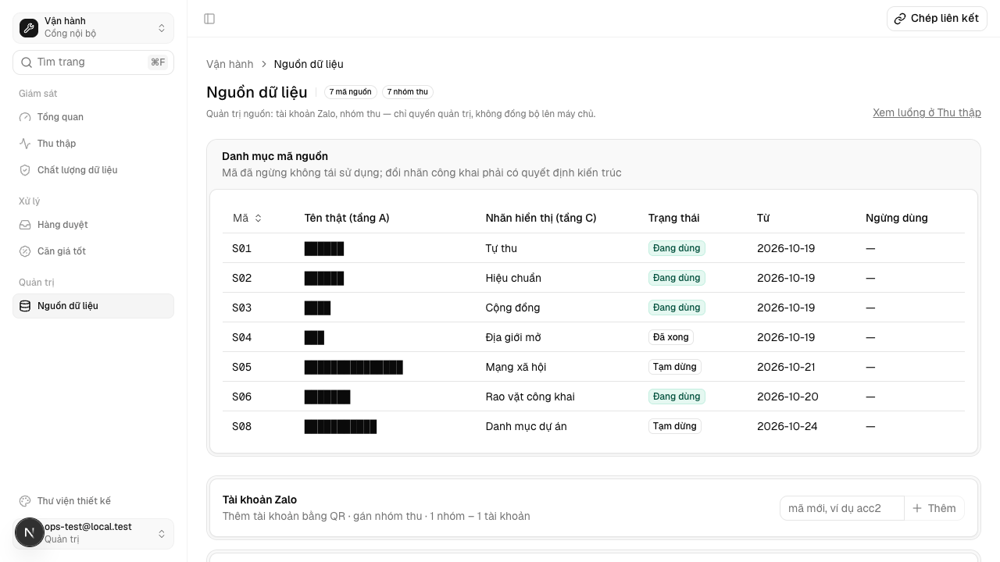
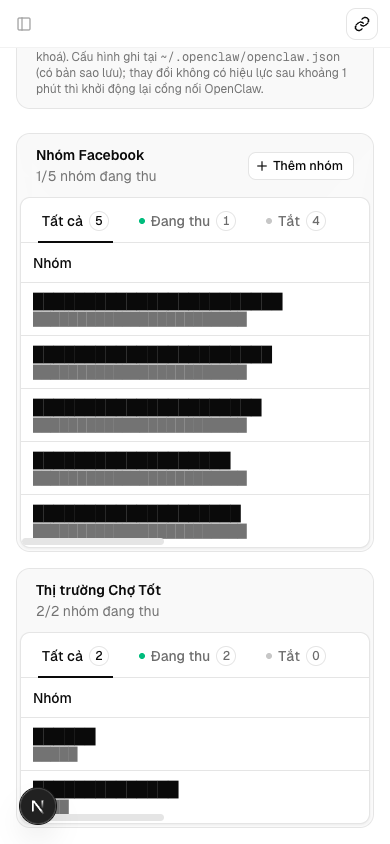
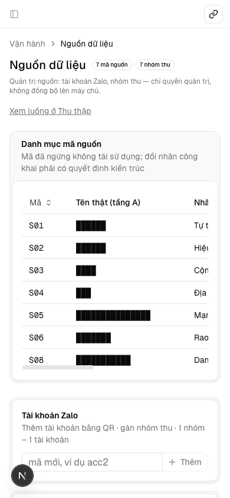
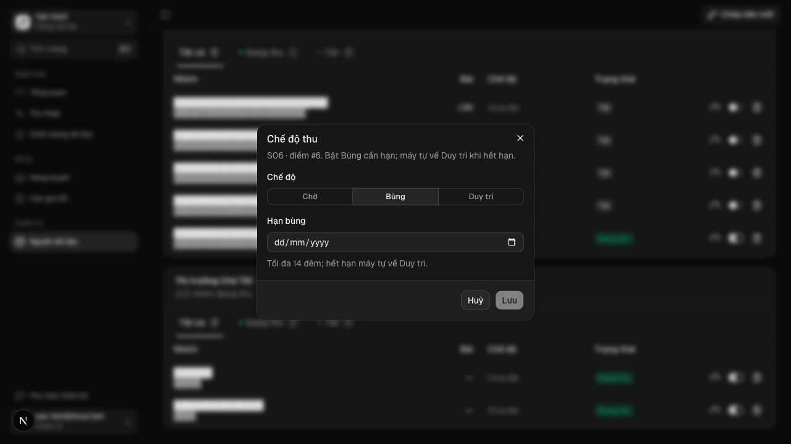
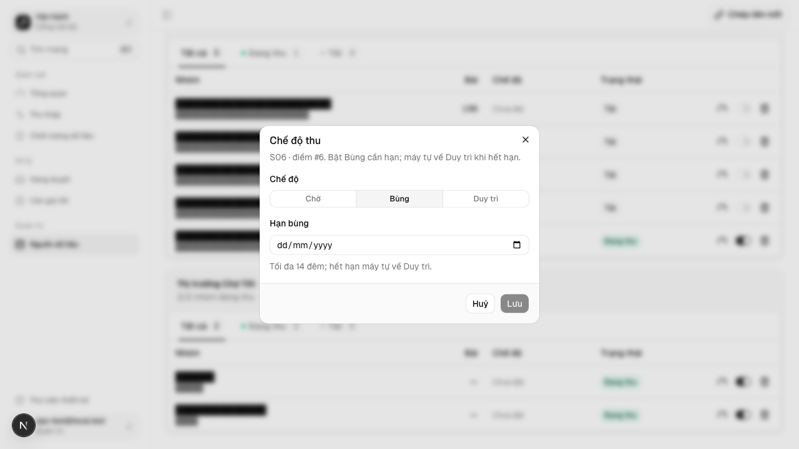
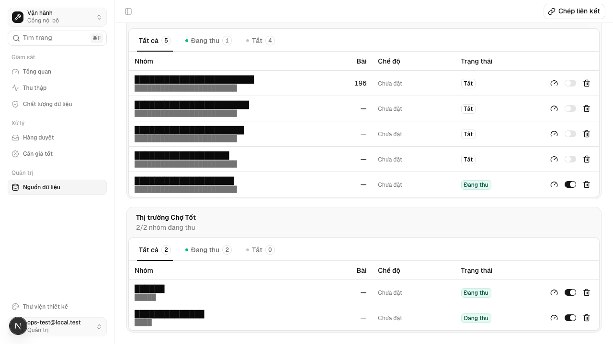
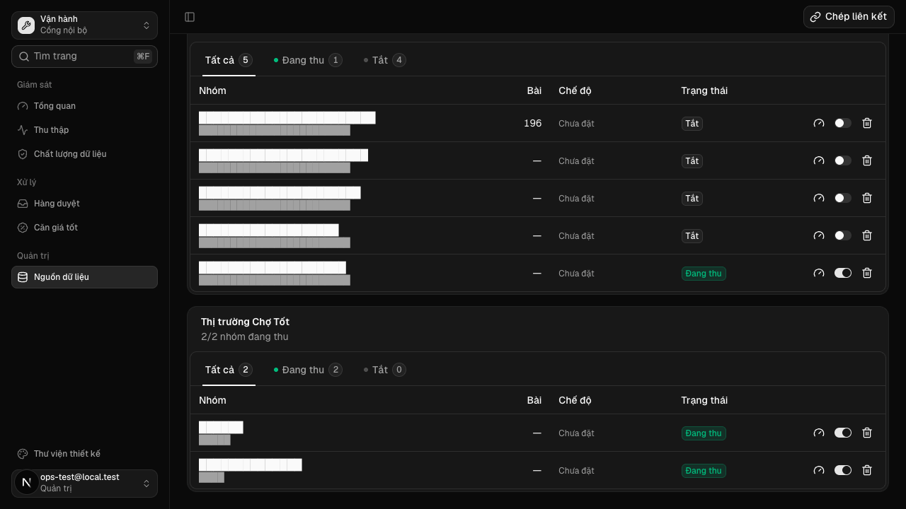
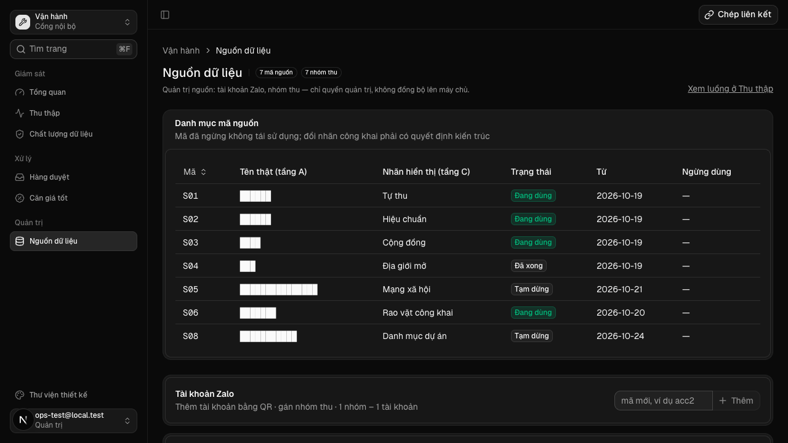

"/ops/sources hiện và đổi chế độ thu (Chờ · Bùng · Duy trì) của từng điểm thu — bật Bùng chỉ admin và bắt buộc hạn ≤ 14 đêm; máy tự hạ bùng quá hạn về Duy trì; mọi lần đổi ghi ops_audit"
Vì sao làm
Căn cứ: docs/plan/vet-dau-loang-thu-thap-2510.md §4 hàng C7 («/ops/sources hiện và đổi mode của từng điểm (admin). Bật bung bắt buộc nhập hạn. Máy hạ thì ghi ops_audit.»), §1.4 (tăng tải thì người duyệt, giảm tải thì máy tự làm; BÙNG có hạn) và §6 Hỏi-3 (Mạnh duyệt từng lần bật BÙNG; máy tự hạ về DUY TRÌ, có audit). Giám sát xếp hàng vào dãy P4 (ưu tiên 96).
Đã hứa
- AC-1 — Given phiên admin và một điểm thu S06 có `params` sẵn (`region_v2`, `cityCode`), When đặt chế độ Bùng với hạn H+13
- AC-2 — Given phiên admin, When gửi `set-mode` với Bùng thiếu hạn / hạn sai khuôn / ngày không có thật / hạn H−1 / hạn
- AC-3 — Given không có phiên admin (Bearer máy không phiên, hoặc phiên quyền `ops`), When gửi `set-mode` bất kỳ, Then trả
- AC-4 — Given điểm đang Bùng, When admin đổi sang Duy trì hoặc Chờ, Then `burst_until` bị gỡ và `mode_since = H`; When admin
- AC-5 — Given các điểm Bùng hạn H−1, hạn H, thiếu hạn, và một điểm Duy trì, When máy chạy lượt hạ (`haBungHetHan`) lúc
- AC-6 — Given `scripts/cloud-sync.sh` (chạy 15′ trên máy thu), When chạy trong hộp thử job-exit, Then lượt hạ là bước đầu
- AC-7 — Given trang `/ops/sources` có các điểm ở bốn trạng thái (Chờ, Bùng hạn 07/11, Duy trì, chưa đặt), When admin xem và
- AC-8 — Given `CONTEXT.md`, When đọc mục thuật ngữ, Then có «Chế độ thu» (code `mode`, ba giá trị `cho`/`bung`/`duy_tri`) và
Thiết kế
docs/superpowers/specs/2026-10-25-che-do-thu-tren-ops-design.md
Quyết định
- 2026-10-25 · Máy · approach · S1 — Chỉ phiên admin đổi được chế độ thu; Bearer máy (không phiên) và phiên ops nhận 403 — kể cả khi đổi về Duy trì.Kế hoạch đã ký: bật Bùng là tăng tải nên người duyệt từng lần (docs/plan/vet-dau-loang-thu-thap-2510.md §6 Hỏi-3); máy hạ đi đường riêng haVeDuyTri có audit (AC-3, AC-5).
- 2026-10-25 · Máy · approach · S1 — Hạn bùng là ngày cuối còn bùng (giờ VN), hợp lệ từ hôm nay tới hôm nay + 13 — tối đa 14 đêm; gia hạn là một lần duyệt mới, có audit.Kế hoạch đặt trần số đêm mỗi đợt và mốc «hạn 14 đêm» (§1.4, Hỏi-1); AC-1, AC-2 ghim biên H−1/H+13/H+14.
- 2026-10-25 · Máy · approach · S1 — Điểm Bùng thiếu hạn hoặc hạn hỏng (sửa tay DB) bị máy hạ như hết hạn, lý do thieu-han.Luật «không để bùng mãi» (§1.4); AC-5 có hai điểm viết trước cho ca này.
- 2026-10-25 · Máy · approach · S1 — Lượt máy hạ lắp thành bước đầu của scripts/cloud-sync.sh (15′, máy thu), không dựng tác vụ launchd mới.cloud-sync.sh là làn Claude và đã chạy trên máy thu; luật AU13 giữ hai bước sau chạy khi bước hạ hỏng (AC-6).
- 2026-10-25 · Máy · approach · S1 — Ghi params và dòng ops_audit trong CÙNG giao dịch, không dùng auditOpsWrite (ghi nền, lỗi bỏ qua).Mỗi lần bật Bùng là một lần Mạnh duyệt — dấu vết phải chắc có (AC-1, AC-4, AC-5).
- 2026-10-25 · Máy · approach · S1 — Đổi chế độ theo id dòng; detail audit và dòng in CLI chỉ mang id + mã nguồn, không group_key hay tên nhóm.group_key của S05 là URL nhóm (tầng A, AGENTS.md luật 6); id đủ định danh (AC-1, AC-5).
- 2026-10-25 · Máy · descope · S1 — bỏ coverage-scan — sáu trục liệt tay ở mục Coverage phủ người đổi, chuyển chế độ, hạn, dấu vết, nơi hiện, lịch; đổi lại không có bằng chứng độ phủPhạm vi hàng nhỏ, các trục đều có ma trận viết trước ở evals E1–E7.
- 2026-10-25 · Máy · descope · S1 — bỏ design-pass — không có màn mới: một cột Badge và một Dialog theo khuôn có sẵn của chính bảng nhóm thu (new-group-sheet, confirm-delete); ảnh thật chụp ở E8 tại Cổng Bằng chứngĐặc tả UX đã khai bảng trạng thái; Cổng Phạm vi đi làn V không có người bấm thử.
- 2026-10-25 · Máy · approach · S1 — Nền hạ tầng đỏ (bộ quét giao diện design-scan thiếu ở bản kit 2.32.0) chấp nhận có tên — vòng không có eval design; giao diện đo bằng jsdom (E7), lint (E10) và ảnh chụp (E8).duong-nen.md chỉ một dòng đỏ cong-cu khoá executors.design.ui_check.
- 2026-10-25 · Máy · approach · S1 — Hộp «Chế độ thu» ghi mã nguồn và id điểm («S06 · điểm #7»), không ghi tên nhóm; ba chế độ chọn bằng ToggleGroup thay Select.Gap-probe P1: tên nhóm S05/S06 là tầng A, ảnh hộp thoại đi vào evidence của kho công khai (E8); ba lựa chọn thấy cùng lúc và đo được bằng click trong jsdom (E7, E11).
- 2026-10-25 · Máy · approach · S1 — Hôm nay H của hộp thoại do máy chủ tính theo giờ VN (homNayVN) rồi truyền xuống; datCheDo nhận { now } để phép đo ghim biên 23:30Z.Gap-probe P1 biên VN/UTC: ô date và đồng hồ trình duyệt theo múi giờ máy khách (E1, E2, E7).
- 2026-10-25 · Máy · fix · S3 — Phép đo app/tests/che-do-thu.test.tsx chạy trên code cũ a49c09e: 11/12 ca đỏ (thiếu che-do-thu.ts, ha-bung-het-han.mjs, cột UI, thuật ngữ); CD-AC-3b xanh sẵn vì add/toggle vốn không ghi khoá chế độ — giữ làm chốt hồi quy.Chứng phép đo bắt được việc thiếu trước khi code (E1–E5, E7, E9, E11).
- 2026-10-25 · Máy · fix · S4-r1 — E8 chạy app từ chính worktree trên cổng 3461 thay vì :3456 của dev_server.Lúc chấm, :3456 đang phục vụ code của worktree quirky-archimedes-75aa8c (lsof cwd), nên chụp ở đó sẽ đo bản không có cột Chế độ.
- 2026-10-25 · Máy · fix · S4-r1 — AC-7: lưới /ops/sources và phép đo cùng đọc qua docNhomThu (một câu SELECT, id ép số); CD-AC-7/7b viết điểm vào DB rồi đọc qua hàm đó thay cho hàng dựng tay.Phát hiện S4 t4 (thuộc AC-7): hàng viết tay + grep câu SELECT không chứng được Badge theo dữ liệu đã ghi; đối chứng đổi alias AS mode nay làm CD-AC-7 đỏ.
- 2026-10-25 · Máy · fix · S4-r1 — AC-5: phép đo ghép từng dòng audit máy hạ với đúng điểm (id, source_code, ly_do, burst_until) thay vì chỉ kiểm tập khoá.Phát hiện S4 t5 (thuộc AC-5): một bản ghi audit lặp cùng id hoặc sai ly_do vẫn qua phép đo cũ.
Bằng chứng
Các eval
| Eval | Tiêu chí | Loại | Verdict | run_id | verified_at |
|---|---|---|---|---|---|
| E1 | AC-1 | test | PASS | minted-che-do-thu-tren-ops-E1-r2 | 2026-10-25T11:16:51Z |
| E2 | AC-2 | test | PASS | minted-che-do-thu-tren-ops-E2-r2 | 2026-10-25T11:16:51Z |
| E3 | AC-3 | test | PASS | minted-che-do-thu-tren-ops-E3-r2 | 2026-10-25T11:16:51Z |
| E4 | AC-4 | test | PASS | minted-che-do-thu-tren-ops-E4-r2 | 2026-10-25T11:16:51Z |
| E5 | AC-5 | test | PASS | minted-che-do-thu-tren-ops-E5-r2 | 2026-10-25T11:16:51Z |
| E6 | AC-6 | test | PASS | minted-che-do-thu-tren-ops-E6-r2 | 2026-10-25T11:16:51Z |
| E7 | AC-7 | test | PASS | minted-che-do-thu-tren-ops-E7-r2 | 2026-10-25T11:16:51Z |
| E8 | AC-7 | ui-check | PASS | e8-verify-20261025 | 2026-10-25T11:16:51Z |
| E9 | AC-8 | test | PASS | minted-che-do-thu-tren-ops-E9-r2 | 2026-10-25T11:16:51Z |
| E10 | AC-7 | test | PASS | minted-che-do-thu-tren-ops-E10-r2 | 2026-10-25T11:16:51Z |
| E11 | AC-7 | test | PASS | minted-che-do-thu-tren-ops-E11-r2 | 2026-10-25T11:16:51Z |
Chi tiết từng eval
PASS E1 · test
AC-1: Given phiên admin và một điểm thu S06 có `params` sẵn (`region_v2`, `cityCode`), When đặt chế độ Bùng với hạn H+13
ℹ duration_ms 1916.742834
PASS E2 · test
AC-2: Given phiên admin, When gửi `set-mode` với Bùng thiếu hạn / hạn sai khuôn / ngày không có thật / hạn H−1 / hạn
ℹ duration_ms 1916.742834
PASS E3 · test
AC-3: Given không có phiên admin (Bearer máy không phiên, hoặc phiên quyền `ops`), When gửi `set-mode` bất kỳ, Then trả
ℹ duration_ms 1916.742834
PASS E4 · test
AC-4: Given điểm đang Bùng, When admin đổi sang Duy trì hoặc Chờ, Then `burst_until` bị gỡ và `mode_since = H`; When admin
ℹ duration_ms 1916.742834
PASS E5 · test
AC-5: Given các điểm Bùng hạn H−1, hạn H, thiếu hạn, và một điểm Duy trì, When máy chạy lượt hạ (`haBungHetHan`) lúc
ℹ duration_ms 1916.742834
PASS E6 · test
AC-6: Given `scripts/cloud-sync.sh` (chạy 15′ trên máy thu), When chạy trong hộp thử job-exit, Then lượt hạ là bước đầu
ℹ duration_ms 3442.146125
PASS E7 · test
AC-7: Given trang `/ops/sources` có các điểm ở bốn trạng thái (Chờ, Bùng hạn 07/11, Duy trì, chưa đặt), When admin xem và
ℹ duration_ms 1916.742834
PASS E8 · ui-check
AC-7: Given trang `/ops/sources` có các điểm ở bốn trạng thái (Chờ, Bùng hạn 07/11, Duy trì, chưa đặt), When admin xem và









PASS E9 · test
AC-8: Given `CONTEXT.md`, When đọc mục thuật ngữ, Then có «Chế độ thu» (code `mode`, ba giá trị `cho`/`bung`/`duy_tri`) và
ℹ duration_ms 1916.742834
PASS E10 · test
AC-7: Given trang `/ops/sources` có các điểm ở bốn trạng thái (Chờ, Bùng hạn 07/11, Duy trì, chưa đặt), When admin xem và
PASS E11 · test
AC-7: Given trang `/ops/sources` có các điểm ở bốn trạng thái (Chờ, Bùng hạn 07/11, Duy trì, chưa đặt), When admin xem và
ℹ duration_ms 1916.742834
Eval không phân biệt (Analyst)
Vòng verify
- Round 1: mọi eval xanh; hai finding trong hợp đồng (AC-7 hàng SourceGroups dựng tay, AC-5 detail audit chỉ kiểm tập khoá) được sửa ở S4-r1 (lưới đọc qua docNhomThu dùng chung, phép đo AC-5 ghép audit theo điểm), bốn mục ngoài hợp đồng ghi nhận cho Gate 2.
- Round 2: mọi eval xanh trên cây 9d35ae4c; không còn finding trong hợp đồng.
Tài nguyên
| Khối | Tác tử | Token đầu ra |
|---|---|---|
| S4 round 1 | 18 | 66.260 |
| S4 round 2 | 15 | 44.122 |
2 lượt chấm · tổng 110.382 token
Giới hạn và ngoài hợp đồng
- Collector S05/S06 đọc `mode`, `burst_budget`, `maintain_budget` và chạy theo chế độ (V1, làn ZCode).
- Thêm dòng S01 vào `source_groups` (ZCode đề xuất ở V1).
- Sửa ngân sách bùng/duy trì trên UI.
- Hạ theo đạt kho, bão hoà, vấp rào: vòng này chỉ mở cửa `haVeDuyTri`, chưa ai gọi.
- Nhãn chế độ trên `/ops/collections` và chỉ số ⑧–⑩ (tiêu chí C2).
- Đổi quyền của các action cũ (`toggle`/`add`/`delete`) đang mở cho phiên ops.
Giao
chưa ghi quan sát production
Giá trị
- Câu hỏi phép đo trả lời: [đề xuất] admin bật Bùng có hạn trên /ops/sources được không, người không phải admin có bị chặn không, và đợt bùng hết hạn có tự về Duy trì kèm dòng audit không? — chưa đo
- Kết quả nào là SỐNG: [đề xuất] bật/hạ đúng luật trên lược đồ tạm, mọi lần đổi có đúng một dòng ops_audit, bùng quá hạn về Duy trì ở lượt quét kế — chưa đo
- Kết quả nào là CHẾT: [đề xuất] còn một đường bật Bùng không hạn hoặc không phải admin, hoặc một lần đổi chế độ không để lại audit, khi hết timebox — chưa đo
- Timebox: trước đợt 1 TP.HCM (sau khi ZCode xong V1 đọc chế độ) — chưa đo